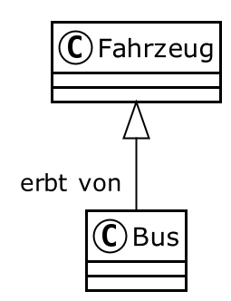
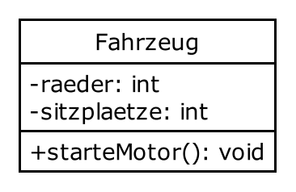
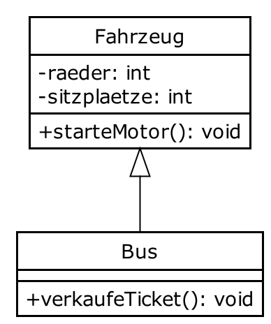
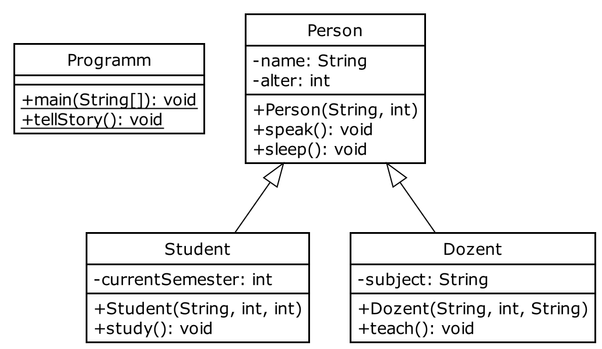

7th Java Lesson (Java Course @ TUD)
https://github.com/Trivo25/tud-java-course
December 02, 2021
Während Ihr darauf wartet, dass es beginnt..
- überprüfen wir Euren 3G-Status
- könnt ihr nochmal die Folien aus der letzten Stunde anschauen
- hier verlinkt: https://trivo25.github.io/tud-java-course/
- VS Code oder https://www.jdoodle.com/online-java-compiler/ öffnen
- die Cheat Sheet öffnen: http://tiny.cc/java-cs
Java
Objektorientierte Programmierung
Florian Kluge, Moritz Schulz
- Dezember 2021
Florian.Kluge@mailbox.tu-dresden.de
Moritz.Schulz2@mailbox.tu-dresden.de
Was wir heute machen
Objektorientierte Programmierung: Vererbung
- static
- Vererbung
- Visualisierung von Klassen (UML)
Contact
Florian Kluge
Florian.Kluge@mailbox.tu-dresden.de
Moritz Schulz
Moritz.Schulz2@mailbox.tu-dresden.de
Kurze Info zum Kurs
- bitte abmelden / entschuldigen, wenn ihr nicht kommt
- zwei Mal in Folge unentschuldigt fehlen => ausgetragen
- praktische Aufgaben- und Beispiel-basierte Lernweise
- wir laufen herum und gucken, dass ihr zurecht kommt
- bitte, fragt gern, jederzeit
- auch per E-Mail / via Kursseite
- uns geht es darum, alle mitzunehmen
Stay up to date
- die E-Mails der TUD regelmäßig überprüfen
- z.B. Bekanntgabe der Veröffentlichung der Folien
- auf der Seite des Programmierkurses
- z.B. Bekanntgabe der Veröffentlichung der Folien
Los geht’s!
20min für das Problem vom letzten Mal
- Aufgabe weiterbearbeiten, falls noch nicht fertig
- andere Aufgabe anfangen, falls noch nicht begonnen
- sinnvoll erweitern, falls beide “fertig”
Bankkonto - mittel - Teil 1
- schreibt eine Klasse
Bankkontowelches folgende Attribute hat- String: kontoInhaber - Name Kontoinhaber*in
- float: maxiUeberzug - Maximum welcher Betrag das Konto überzogen werden kann(‘im Minus’)
- String: iban - IBAN/Kontoaddresse
- int: anzahlTransaktionen
- float: guthaben - Guthaben
Bankkonto - mittel - Teil 2
- erweitert die Klasse
Bankkontoum folgende Methoden (Parameter ausgelassen):- boolean: sendMoney() - schickt einen Betrag an ein anderes Konto und passt das Guthaben an, gibt false oder true zurück wenn es erfolgreich war oder nicht
- void: payIn() - zahlt Geld in das Konto ein
- boolean: withdraw() - hebt Geld von dem Konto ab, gibt false oder true zurück wenn es erfolgreich war oder nicht
Pokémon - schwer - Teil 1
- Schreibt ein Pokémon-Spiel in dem sich zwei Pokemons gegenseitig attackieren!
- Pokémons kämpfen (hier) gegeneinander, indem sie sich gegenseitig Lebenspunkte abziehen
- Nutzt dafür eine Klasse
Pokemonmit folgenden Attributen:- String: name - Name des Pokémons
- private float: health - Lebenspunkte des Pokémons
- private float: attackPower - Angriffspunkte des Pokémons
- private boolean: isDead - boolean ob Pokémon am Leben ist oder nicht
Pokémon - schwer - Teil 2
- Die Klasse
Pokemonsoll folgende Methoden haben (Parameter ausgelassen):- boolean: getIsDead() - gibt true oder false zurück wenn Pokémon lebt bzw. wenn nicht
- void: attack() - nimmt ein Pokémon-Objekt als Methoden-Parameter und greift es an, fügt im attackPower Schaden zu!
- void: dealDamage() - zieht Leben des Pokémons ab
Das Keyword static
Wenn Funktionen und Variablen
zu keinem bestimmen Objekt gehören,
sondern zur Klasse
Was heißt eigentlich static?
- z.B. in der Funktion
public static void main(String[] args) - Alles, was
staticist, gehört zu einer Klasse und zu keinem bestimmten Objekt - Beispiel:
- Funktionen sind
static, Methoden sind nichtstatic
- Funktionen sind
⇒ um auf static Funktionen zuzugreifen braucht man kein Objekt
Wofür ist static gut?
- wir können beispielsweise Funktionen in einer Klasse gruppieren
- (
static) Funktionen lassen sich ohne Objekt aufrufen - (
static) Funktionen haben aber keinen Zugriff auf Attribute vom Objekt der Klasse- denn es ist ihr kein Objekt bekannt
- Gegensatz: Methoden (ohne
static) gehören immer zu einem Objekt einer Klasse!- können nur aufgerufen werden, wenn eine Instanz der Klasse (ein Objekt) vorliegt
Beispiel für static
public class Programm {
public static void main(String[] args) {
Quadrat luca = new Quadrat(10.0f);
float flaeche = luca.flaeche();
float flaeche2 = Quadrat.berechneFlaeche(5.0f);
}
}
class Quadrat {
public float seitenlaenge;
public Quadrat(float a){
seitenlaenge = a;
}
public float flaeche() {
return berechneFlaeche(seitenlaenge);
}
public static float berechneFlaeche(float f) {
// kennt seitenlaenge nicht!
return f * f;
}
}Anwendung von Funktionen
Funktionen (mit static) kennen also nur - ihre Parameter - übergeordnete static Variablen
Das heißt, sie brauchen kein zusätzliches Wissen.
Anwendung: - so haben wir zu Beginn Funktionalität ausgelagert - z.B. sqrt (Quadratwurzel) braucht nichts außer der Zahl zu wissen
auch Variablen einer Klasse können static sein
public class Apokalypse {
public static void main(String[] args) {
Zombie zombie1 = new Zombie();
Zombie zombie2 = new Zombie();
Zombie zombie3 = new Zombie();
Zombie zombie4 = new Zombie();
Zombie zombie5 = new Zombie();
System.out.println("Es gibt " + Zombie.anzahl + " Zombies!");
}
}
class Zombie {
public static int anzahl = 0;
public Zombie(){
anzahl++;
}
public void laufe() {
System.out.println("*hink*");
}
}Vererbung
- es gibt Objekte, die einander ähnlich sind
- Beispiele:
- Auto, LKW, Bus -> alles Fahrzeuge
- Kuh, Schaf, Schwein -> alles Tiere
- Rechteck, Kreis, Dreieck -> alles geometrische Formen
Vererbung
- sie haben Gemeinsamkeiten
- diese Gemeinsamkeiten können wir bestimmen auf:
- gemeinsame Eigenschaften (Attribute)
- gemeinsames Verhalten (Methoden)
Vererbung
- wir können eine Klasse bilden, die nur diese Gemeinsamkeiten enthält
- sie nennen wir
superclass(übergeordnete Klasse)
- sie nennen wir
- aus dieser Klasse können wir
subclasses(untergeordnete Klassen) ableiten- sie übernehmen alle Attribute und Methoden der
superclass- dieses “Übernehmen” heißt Vererbung
- sie übernehmen alle Attribute und Methoden der
- Beispiel: (“->” heißt: “erben von”), alles sind Klassen
subclassesAuto, LKW, Bus ->superclassKraftfahrzeugsubclassesKuh, Schaf, Schwein ->superclassTier
Vererbung - Beispiel
- PKW, Bus, LKW -> Fahrzeug
- ein PKW erbt alle Attribute und Methoden der Klasse Fahrzeug
… aber wie sieht das in Java aus?
Vererbung - Beispiel
- Klasse
Fahrzeug, so wie wir es bis jetzt immer gemacht haben
Vererbung - Beispiel
- Klasse
Bus- ist ein Fahrzeug, hat aber besondere Eigenschaften- Vererbung mit
extendssignalisiert
- Vererbung mit
Vererbung - Beispiel
Bushat nun automatisch alle Methoden und Attribute von der KlasseFahrzeuge- zusätzlich gibt es für jedes Objekt der Klasse
Bus- alle “besonderen” Methoden/Attribute
- wie beispielsweise
void sellTicket()
- wie beispielsweise
- alle “besonderen” Methoden/Attribute
Visualisierung
- Vererbung von Klassen lässt sich visuell darstellen
- meist mit einem UML (Unified Modeling Language) Diagramm
- wichtig für die weiterführenden Semester!
- UML Diagramme stellen visuell den Zusammenhang von Klassen, Paketen, … dar
UML - Beispiel Fahrzeug/Bus
Bus erbt von Fahrzeug

UML - Beispiel Fahrzeug/Bus
- wir können ebenfalls Methoden und Attribute im Diagramm darstellen
UML - Beispiel Fahrzeug/Bus
- Attribute (Variablen) im Format:
-variableName: Datentyp
- Methoden im Format:
+methodenName(Parameter): Datentyp

UML - Beispiel Fahrzeug/Bus
- Vollständiges Klassendiagramm von Fahrzeug <- Bus

Vererbung - Bemerkungen und Zusammenfassung
- Klassen können von anderen erben
- dafür nutzen wir das
extendsKeyword
- dafür nutzen wir das
- Klassen können somit Attribute und Methoden einer Oberklasse erben
- dann übernehmen Objekte einer Klasse auch Attribute und Methoden der Oberklasse(n)
- Wann macht das Sinn? Wenn die Oberklasse viele Merkmale mehrere Unterklassen verbindet
- Beispiel:
- Hund, Katze, Vogel -> alles Tiere
- PKW, LKW, Bus -> alles Fahrzeuge
- …
- Beispiel:
- mehrere Klassen können von einer Oberklasse mit
Unterklasse extends Oberklasseerben- wir können aber nur von einer Oberklasse erben!
Vererbung - Bemerkungen und Zusammenfassung
- Vererbung kann sich theoretisch unendlich lang weiterziehen..
- Beispiel:
- Oberklasse: Tier
- Wolf erbt von Tier
- Hund erbt von Wolf
- Haushund erbt von Hund
- Schäferhund erbt von Haushund
- ….
- Beispiel:
- Klassen können mehrere Oberklassen haben
- jede Klasse hat automatisch die Oberklasse
Object- später mehr zu den Eigenschaften, die das mit sich bringt
- Beispiel:
- Kugel erbt von 3DKörper, RollendesObjekt, Object
- jede Klasse hat automatisch die Oberklasse
Vererbung - Bemerkungen und Zusammenfassung
- Was ist der Sinn hinter (mehrfach) Vererbungen?
- Oberklassen sind allgemein / generalisiert
- Unterklassen werden immer spezialisierter
- Oberklassen beschreiben grobe Zusammenhänge
- und Unterklassen spezialisieren diese
mit mehreren Dateien arbeiten
denn eine Klasse pro Datei ist üblich
online
https://www.jdoodle.com/online-java-compiler-ide/

- VS Code
- mehrere Dateien
- Empfehlung: neuer Ordner
Ordner - im Terminal:
cd Ordner# wechselt in den Ordnerjavac Datei1.java Datei2.javajava Datei1# die Datei, diemainenthält
Vererbung und UML - Aufgabe
- folgendes UML-Diagramm beschreibt folgenden Zusammenhang:
- Oberklasse: Person
- eine Person hat verschiedene Attribute und Methoden
- Unterklasse 1: Student erbt von Person
- ein Student hat spezialisierte Methoden und Attribute
- Unterklasse 2: Dozent erbt von Person
- ein Dozent hat wiederum ebenfalls spezialisierte Methoden und Attribute
- Oberklasse: Person
Vererbung und UML - Aufgabe
- Entwickle die Klassen und definiere die entsprechenden Attribute, Methoden und Konstruktoren.
- Die Methoden geben jeweils Text aus, der sie beschreibt
- Die Funktion
tellStory()in der KlasseProgrammsoll den Tagesverlauf eines Studenten beschreiben- dazu soll sie entsprechende Objekte verwenden
Vererbung und UML - Aufgabe

Nächste Stunde
- meeeehr OOP
Tipp: Advent of Code
Links, Contact Info, Feedback
See course materials here: https://trivo25.github.io/tud-java-course/
Check out the Cheat Sheet: http://tiny.cc/java-cs